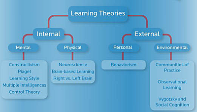
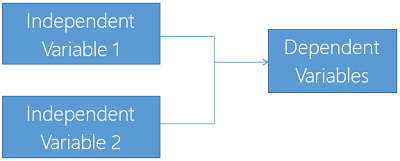
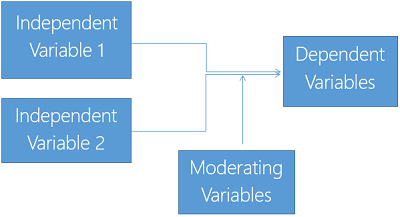
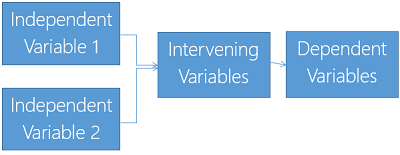

Business Research: A Cheat Sheet
By Dr. Janaka Low
This guide is applicable to both master and doctoral students. Please bear in mind that there are significant differences between master and doctoral research. In addition to higher expectation on rigor in design and analysis, doctoral research requires significant theoretical contributions to the field of study.
In the following section, I will go through a typical research report structure. To make the cheat sheet more useful, I have included (i) frequently asked questions (FAQ) you will face during viva sessions, and (ii) a checklist at the end of each chapter.
In the last section, I will give general advice on managing the research project. These pieces of advice are quite important. Most students who fail to complete their research was due to the problems mention in this section. Note that this guide is biased toward quantitative methods due to my limited experience in qualitative and mixed-mode research. Also, the guide mainly deals with academic research rather than the industry research.
Most higher learning institutions require the students to structure their thesis/report into a 5-6 chapter write up. Typically, 5-chapter structure will include (1) Introduction, (2) Literature review, (3) Methodology, (4) Analysis and results, (5) Discussion and Conclusion. 6-chapter structure usually has a dedicated chapter on the research theoretical framework after literature review, resulting in (1) Introduction, (2) Literature review, (3) Theoretical framework, (4) Methodology, (5) Analysis and Results, (6) Discussion and Conclusion. In Europe, it is common to see literature review and analysis expend to multiple chapters.
Do not start or end your chapter abruptly. Each chapter should start with an introductory paragraph. Usually it will mention what the chapter is about. Each chapter should end with a concluding paragraph. Usually it summarizes what you said in the chapter. Similarly do this for every major section in your thesis or report. For sections that are closely linked with the subsequent sections, write a leading sentence to prepare or lead your reader for the following sections.
The following sections describe what you should (and should not) write in each chapter.
The introduction chapter should include the background of the issue or problem in which your research is conducted. In this chapter, you will need to state your research gap clearly.
Gaps are “holes” in the knowledge, which you are trying to patch. We find gaps when an issue is not addressed in the literature (perhaps due to new development in the business environment such as the advancement of social media), or when there is inconsistency between a number of studies, or when there is an unresolved issue in the literature.
Gaps are usually expressed in the research problem statement. It can be a national problem (e.g.., competitiveness of a country), a company problem (e.g.., your company is facing sales problem), an industry problem (e.g.., the hospitality industry is facing a problem), a business function problem (e.g.., the operation of your company is inefficient), a theoretical problem (e.g.., a theory proposed by the previous research is not generalizable), or a methodology problem (e.g.., a research method used in a previous research was inappropriate). Problem statement should include: (i) what you know, (ii) what you don’t know, and (iii) what you want to know.
After explaining the background situation, you bring out the need to perform further research in a specific area. This will be your research objectives.
Once you have the research objectives, you list down all your questions that your research will attempt to answer. This will be your research questions.
Following this, you should emphasize the possible significance of your research. Your research significance should answer these few questions:
You will need to be explicit in your unit of analysis. If you are analyzing companies, your unit of analysis will be at the company level. If you are researching individual employee or consumer, then your unit of analysis will be at the individual level.
Be very careful about your ability to collect enough data from companies.
Viva FAQ
Start your literature review on the broadest concept. Then gradually narrow down to specific concept.
For example, if you are researching about marketing control, start with the review of the broad concept of “control” and “marketing”. Then explain how other authors gradually focus on the issue of marketing control.
Another example, let’s say you are using observational learning theory to frame your research, you should start with introduction to learning theories, then down to external learning approach, then down to environment-driven learning, then only you go to observational learning theory. See figure below.

In many universities, you are required
to use “underlying” or “underpinning”, or “parent” theories to support your
hypotheses or framework. This requirement has been a major trauma for many
students whom I have worked with. This is simply because in the academic world,
everything has to be supported by “theories”.
Most of the management and business concepts have their roots on basic philosophical theories. As business and management are closely related to economic theories, many theories have their root in economics.
The "Encyclopedia of Management Theory" (http://goo.gl/qU2Nn2) gives us a list of management theories. Alternatively, you can get the eBook from Google Play Book Store (see http://goo.gl/35eo51) and read it on your smart devices.
Theories can also be called “model”, “principle”, or sometimes just the name itself, e.g., “hierarchy of needs”.
Accounting researcher may benefit from accounting theories (See http://highered.mcgraw-hill.com/sites/dl/free/0070277265/695504/DeeganFAT_3e_Chapter_01.pdf).
Organization theories can be used for management and HR research (See http://www.academy-british.co.uk/Library-eng/organizational-theory.pdf, p. 12.)
You can use a variety of expression to accurately describe the authors’ positions. For example:
Avoid vague and weak expression such as “Kotler stated that…”, or “Kotler mentioned that …”. A better choice of verb includes the following: assert, emphasize, posit, argue, maintain, suggest, propose, point out, claim and consider. You can also use these verbs to indicate that an author has made certain findings: confirm, report, conclude, identify, found, reveal, demonstrate, and discover.
For the field of business and management, ideally you should have 40% of your literature taken from recent publications, i.e., within the past 5 years.
Based on what you want to do (research objectives) and literature reviews, you should have decided what you want to prove.
Usually you want to show that different concepts are related (correlated with each other, one variable causes another, some are grouped together) and you can draw your theoretical framework.
All key concepts in your research must be measurable. When a concept is measured on a scale, it is referred to as variable. When a concept is measured with several scale items, it is referred to as a construct.
Hypotheses should be phrased clearly and it must be testable. There are at least three 3 ways to express your hypotheses:
Whichever way you choose, you should be consistent throughout your entire write up.
The most common forms of the theoretical framework diagrams have the independent variables (IV) on the left and dependent variables (DV) on the right.

Note that this is a very simplistic framework. You may have moderating variable (MV) in between:

It is important to understand that moderating variables weaken, amplify or even reverse effects of IV on DV. MV does not directly affect DV. For example, we suspect that psychotherapy may reduce depression – more for men than for women; we would say that gender (MV) moderates the relationship between psychotherapy (IV) and depression (DV).
In some cases, you may have intervening (IVV) variables: Intervening variables are also known as mediating variables.

Also, you should specify all your hypotheses in this chapter.
In this chapter, you should discuss about your methodologies.
Here you can also review literature, but only on their methodologies. You can borrow survey questions from other authors which are established in their fields.
In this chapter, you present the overview of the data collected. Indicate if your data collection efforts is successful. You should also present a table showing the profile of the respondents.
Then you can show a descriptive statistics table with at least mean and standard deviation values for each variable you measured.
A correlation matrix is a useful way to show whether there are correlations between your variables. So include it.
You should at least perform reliability tests to the data. Typically, this is done with Cronbach alpha analysis. Drop the items that contribute to low reliability statistic.
You should perform factor analysis on variables to summarize them.
Then you proceed to test all your hypotheses.
In this chapter, you summarize the findings of your research, offer possible explanations of the results, discuss the theoretical and managerial implications, and mention about the limitations of the research. You should also include suggestion for future research, usually based on the limitation of the research, or new ideas that you have that do not fit into the current research.
You can use the following check list to ensure that you meet the requirements of the research report.
Overall Check list
Abstract can be overlooked easily by many students and it is often written haphazardly without much thought. A good abstract should include the following elements: (i) Purpose, (ii) Design / methodology / approach, (iii) Findings, (iv) Research limitations / implications, and (v) originality/value of the research. For example, here is an appropriate abstract:
The primary purpose of this paper is to examine empirically the significant determinant for supply chain partnering (SCP) that can be applied by the firms to increase their effectiveness in SCP efforts. Next, the paper intends to examine the impact of scalable partnering towards the effectiveness of SCP. To address the research problem, a survey instrument is developed and a structured model is hypothesized and tested using SPSS tool. Data are collected from a field research on a sample of 584 companies in Malaysia. The result of this research indicates that resource sharing has positive influences on SCP. Increasing scalable partnering would also lead to increases in the effectiveness of SCP. One of the limitations of the study is that the use of a single key informant for the data collection from the respective companies. A more stringent test of the relationships between scalable partnering and its impact in SCP requires a longitudinal study. Managers must also recognize the influential role of scalable partnering which motivates channel partners to continue their investment in SCM initiatives. Thus, managers should pay more attention to the need of channel member to generate a higher level of confidence in scalable partnering. While SCP and its determinant exist in prior research, this paper contributes a new variable “Scalable Partnering” towards strengthening the relationship among the supply chain partners.
Dissecting the abstract, we see the 5 elements:
Like any other projects, your research must be carefully planned and put in the necessary commitments and resources.
Here are some tips:
Generally, there are 3 considerations: (a) choose an area that you are familiar with; (b) you must be able to collect data; (c) you have passion in the chosen area.
Being familiar with a topic is very important especially when you are defending your proposal or findings. You will face both broad and in-depth questions during your defense session. Your examiners can quickly form a negative opinion about you if your answers as superficial.
Ability to collect data is crucial. Without data, you will not be able to proceed with your research beyond proposal.
Your passion in the chosen research area is important because you need the drive and motivation to complete the often long and arduous research journey. In addition, the examiners will feel positive about you if you speak passionately about your research during your defense. Generally, examiners despise candidates who don’t take interest in his or her research topic.
The biggest and most frequent mistake students make is underestimating the time required to conduct and complete the research.
The very fact that it is a "re"search implies that you will need several rounds of trials and errors. As much as we would like it to be structured, its nature is unstructured, ambiguous, unpredictable and full of surprises. As such, you should give yourself plenty of buffer time. Unless you are a seasoned researcher, the small mistakes you make along the way can throw you off track.
If you are part-time students, prepare to take some leaves from your work during the initial period of your research. Give yourself enough time to immerse yourself in the research topic.
Imagine if you need 30 minutes to boil a kettle of water, 10 minutes of boiling distributed over 3 days won’t do it. You must boil it in one go.
Working on research means working at the edge of human knowledge. In that place, you do not find a lot of agreements among the people living there. Not only experts disagree with the concepts and theories, they also have strong disagreement in styles and approaches. One university can place high importance on quantitative method while another university has distaste on number crunching. In other words, there are different “research culture” in different research institutions. Be mindful of the acceptable boundary of your “stakeholders” – your supervisor, your university and your potential examiners. Crossing the boundary means hell for you.
There are two reasons for this. First, you want to be able to get familiar with the concepts used in the field so that you can understand the literature and discuss with your supervisor intelligently. Secondly, you want to avoid making conceptual mistakes. A term used commonly in daily conversation can have very different meaning in research. In research, you should avoid using terms in a very general sense, especially the concepts related to the key variables in your research. For example, the term “impact” is used in our daily language, but need to be defined very specifically in your research.
There are two ways to get you up to speed quickly: talk to people and read others’ works.
Talking to people does not mean talking to anyone. There are specific techniques you can use. Start with purposeful interview with the leading experts in the field, and conduct focus groups if your research involves practical issues. Since most business research projects are not basic research projects, you can almost be certain that you will benefit from a focus group.
Reading others’ work is not as obvious as you think. You may be tempted to start reading the world leading journal in the field. However, you will miss a lot of points for skipping the past research done at your very own university. Remember that the research papers done locally are the ones that fulfill the acceptable boundaries. Reading them get you to have realistic plan early.
Unless this is your 10th research project, your main objective in the project should be just learning the research methods and acquiring the research skills.
Too often novice researchers are expecting their first research to solve their real world problems. While it is true that your interest in solving certain problem leads you to taking up the master or doctoral degree, do not expect your research to solve your real problem. If it eventually does solve the problem, cool, otherwise, it is perfectly okay. Remember your research project has enough burdens to meet many requirements – especially those set by your institution. Do not impose further requirements on it, or you risk killing it. Tell yourself it is not going to be the last research you do in your life. Leave it for another day.
Research should be done by matured individuals. That is why research is only done by master and doctorate level students.
Most supervisors expect you to take the driver seat. That means you are expected to plan and manage your entire research. No babysitting, no spoon feeding.
Matured students take initiatives and take ownership of the research efforts. Some compassionate supervisors will try their best to help you. Even so, they can quickly get dishearten if you are not interested to help yourself.
The easiest way to help yourself is to quickly set up the rhythm of your meeting with the supervisor. Once the project has started, make a point to meet your supervisor regularly. Fortnightly or monthly is appropriate. If you do not contact your supervisor several months in a row, you risk your supervisor losing interest in helping you.
Regularly meeting your supervisor also gives yourself extra push to complete the work. Use the meeting as mini-checkpoints, which force you to show your supervisor some progress.
I use the term “rhythm” intentionally. Think of it as your heart beat. If you fail to set up the rhythm, your research will be dead soon.
You may be tech-savvy. But you cannot change the human behavior. It is tempting for part-time students to rely on emails to communicate with their supervisors. That can be a big mistake! I have seen many students failed or nearly failed because of their refusal to meet face-to-face.
When you meet your supervisor, a lot more things are going on than just exchange of information and facts. There are body language and other non-verbal communications going on. More importantly, your supervisor may need to get across many emotional messages that cannot be embedded in words inside emails. It is not because your supervisor is unable to express them in typed words. He or she simply does not want to communicate it through formal “black and white” channel. Strong emotions, such as being pleased with your progress or frustrated with your failures, will never be written in emails. Just imagine, who is willing to have a conversation with you if he or she knows that you have turned on a voice recorder? These emotional clues are extremely important messages that the supervisors would want you to receive.
The best is still having face-to-face meeting. Otherwise, try Skype or Google Hangout. If that still is not possible, make phone calls. Use email only as the last resort for discussion. Email should only be used for completed works for review.
It is very important for you to have a positive and professional relationship with your supervisor. Here are some useful principles:
The key to defending your research is to prepare yourself for challenges from your supervisor or examiners. You should proactively justify everything:
I still see student typing out the table of contents by hand. You should spend some time learning the critical skills on these features:
Generally, you should not exceed 20% similarity. You should check with your institution the expected threshold.
Doing a research is not simple and requires detailed planning and execution. You should understand the requirements and the rule of the game clearly as early as possible. Commit time, learn quickly, set up work rhythm and communicate face-to-face with your supervisor often.
P/S: I wish you all the best in your research. If you have questions or comments, please email to janaka.low@gmail.com
This document is not meant to be a comprehensive guide. It focuses on practical issues and provides quick answers and solutions to common problems faced by postgraduate level business students. As research methods can be highly controversial, the author does not wish to get into debates on the approach suggested in this document.